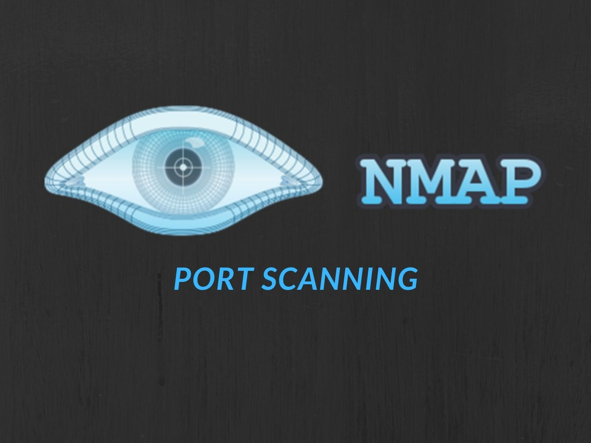

NMap

Nmap is a very powerful utility that can be used to:
* Detect the live host on the network (host discovery)
* Detect the open ports on the host (port discovery or enumeration)
* Detect the software and the version to the respective port (service discovery)
* Detect the operating system, hardware address, and the software version
* Detect the vulnerability and security holes (Nmap scripts)
How to use Nmap effectively:
The usage of Nmap depends on the target machine because there is a difference between simple (basic) scanning and advance scanning. We need to use some advanced techniques to bypass the firewall and intrusion detection/preventative software to get the right result. Below are the examples of some basic commands and their usage:
To scan a single system
# nmap 192.168.1.1
To scan entire subnet
# nmap 192.168.1.1/24
To scan multiple targets, seperate each target via space
# nmap 192.168.1.1 192.168.1.8
To scan a range of IP addresses, but not the entire subnet
# nmap 192.168.1.1-100
to see the list of all the hosts that you are scanning
# nmap -sL 192.168.1.1/24
to scan the entire subnet but not a specific IP addresses
# nmap 192.168.1.1/24 – -exclude 192.168.1.1
To scan a specific port on the target machines
# nmap -p80,21,23 192.168.1.1 (for port number 80,21 and 23)
Nmap Scanning Techniques
There are so many scanning techniques available on Nmap.TCP SYN Scan (-sS)
It is a basic scan, and it is also called half-open scanning because this technique allows Nmap to get information from the remote host without the complete TCP handshake process, Nmap sends SYN packets to the destination, but it does not create any sessions, As a result, the target computer can’t create any log of the interaction because no session was initiated, making this feature an advantage of the TCP SYN scan. A root/administrator privileged.
# nmap -sS 192.168.1.1
TCP connect() scan (-sT)
This is the default scanning technique used, only if the SYN scan is not an option, because the SYN scan requires root privilege. This completes the normal TCP three way handshake process and requires the system to call connect(), which is a part of the operating system. However one should keep in mind that this technique is only applicable to find out the TCP ports, not the UDP ports.
# nmap -sT 192.168.1.1
UDP Scan (-sU)
This technique is used to find an open UDP port of the target machine. It does not require any SYN packet to be sent because it is targeting the UDP ports. But we can make the scanning more effective by using -sS along with –sU. UDP scans send the UDP packets to the target machine, and waits for a response—if an error message arrives saying the ICMP is unreachable, then it means that the port is closed; but if it gets an appropriate response, then it means that the port is open.
# nmap -sU 192.168.1.1
FIN Scan (-sF)
Sometimes a normal TCP SYN scan is not the best solution because of the firewall. IDS and IPS scans might be deployed on the target machine, but a firewall will usually block the SYN packets. A FIN scan sends the packet only set with a FIN flag, so it is not required to complete the TCP handshaking.
# nmap -sF 192.168.1.8
Ping Scan (-sP)
Ping scanning is only used to find out whether the host is alive or not, it is not used to discover open ports. Ping scans require root access. ICMP packets can be sent, but if the user does not have administrator privilege, then the ping scan uses connect() call.
# nmap -sP 192.168.1.1
Version Detection (-sV)
Version detection is used to find out what software version is running on the target computer and on the respective ports. It is not used to detect the open ports but it requires the information from open ports to detect the software version. In the first step of this scan technique, version detection uses the TCP SYN scan to find out which ports are open.
# nmap -sV 192.168.1.1
Idle Scan (-sI)
Idle scan is a highly used technique, since it provides complete anonymity while scanning. In idle scan, Nmap doesn’t send the packets from your real IP address. Instead of generating the packets from the attacker machine, Nmap uses another host from the target network to send the packets.
# nmap -sI 192.168.1.6 192.168.1.1
Here idle scan technique is used to discover the open ports on 192.168.1.1 while it uses the zombie_host (192.168.1.6) to communicate with the target host.
OS Detection
Nmap has the ability to detect remote operating systems and software. It is very helpful during a penetration test to know about the operating system and the software used by the remote computer because one can easily predict the known vulnerabilities from this information.
#nmap -O 192.168.1.1
Here O detects the operating system.
Nmap is a very powerful tool and it has ability to cover the very first aspects of penetration testing, which include information gathering and enumeration.